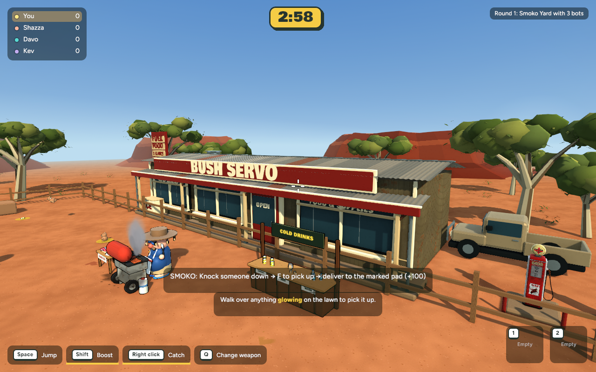
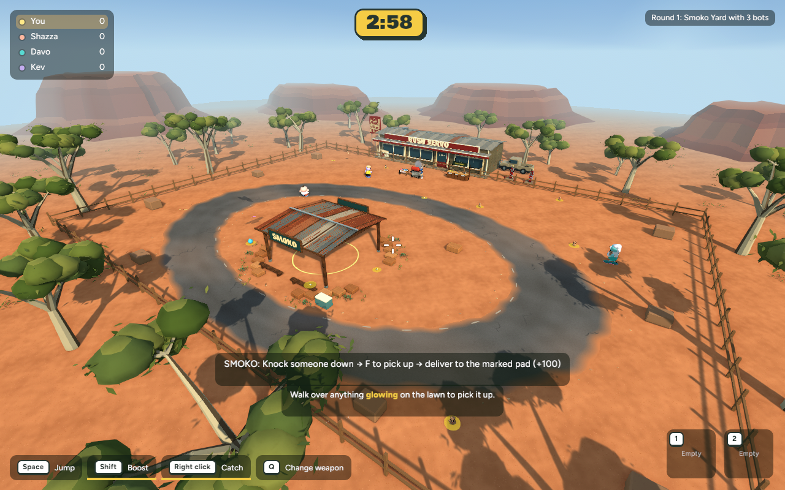
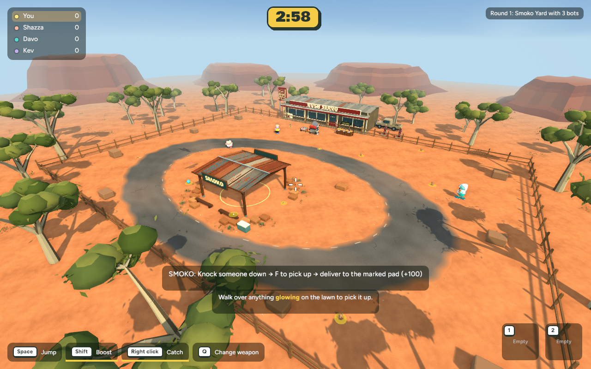
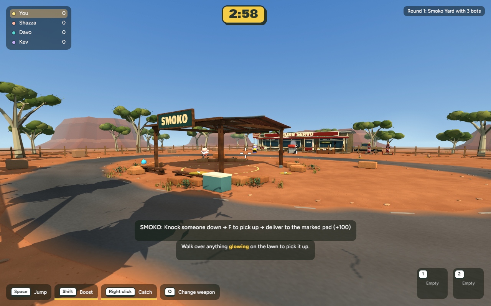
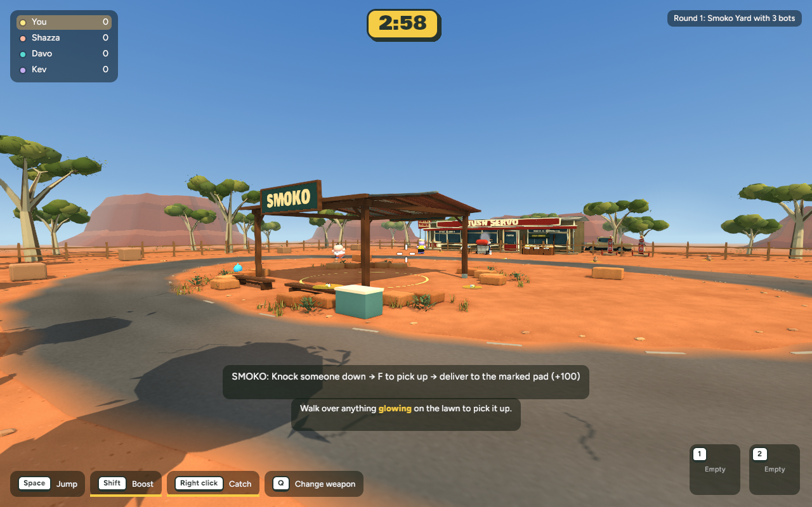
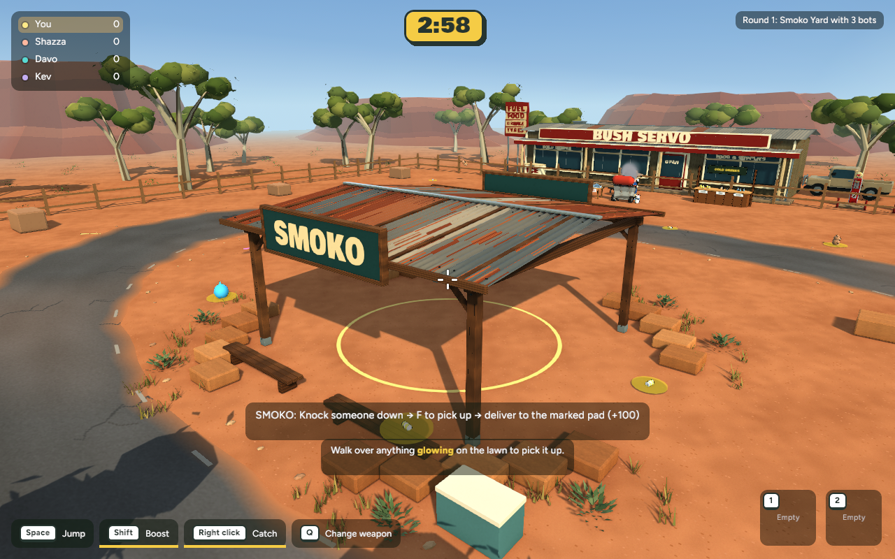
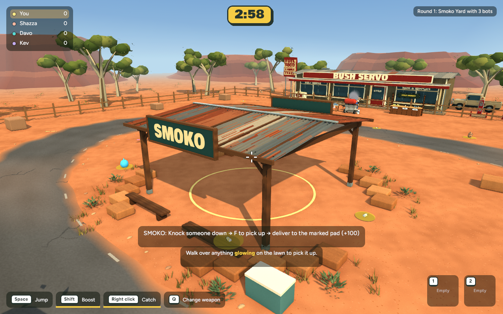
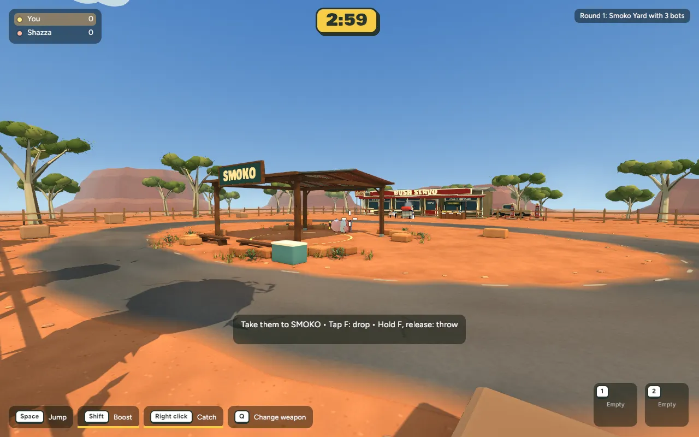

Servo and materials
Before — Stage 4

After — Stage 5
Stage 5 · Actual implemented native game captures · Approved and published
Warmer directional sunlight, brighter shelter and veranda shade, gentler contrast and a restrained distant haze colour. Imported environment textures now have distance filtering, including colour-correct smaller texture levels, to reduce fine-pattern shimmer. Existing models, collision, gameplay and other modes are preserved.








Scripted native Smoko delivery and camera movement. See checkpoint for measured outcome and test details.
| View | Mean milliseconds | Change | p95 milliseconds |
|---|---|---|---|
| overview | 7.751 → 7.204 | -7.1% | 10.832 → 8.478 |
| gameplay | 7.927 → 7.444 | -6.1% | 11.027 → 8.887 |
| close | 7.877 → 7.648 | -2.9% | 11.737 → 9.043 |
| servo | 8.075 → 7.308 | -9.5% | 12.415 → 8.722 |
600 wall-clock frame intervals per view at 1280×800, matched cameras and warmup, with builds stopped. These are not GPU timestamps or browser performance measurements.
This is a focused finishing pass, not an exact match to the concept render. The existing stylised models and foliage remain; filtering reduces texture aliasing but cannot remove silhouette shimmer. No new props or obstacles were added. Stage 5 is now published to the existing Cloudflare browser link; refresh to load the update.
Verification and recovery checkpoint · Backyard regression capture
cd /Users/marcus/Claude/australian-bbq/rust ~/.cargo/bin/cargo run -p bbq_app --release -- --menu
Choose Maps / Game modes → Smoko Yard.